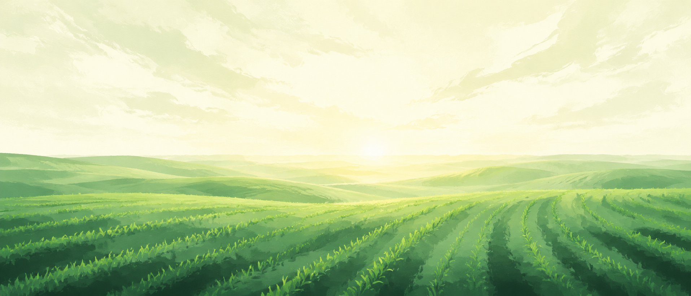
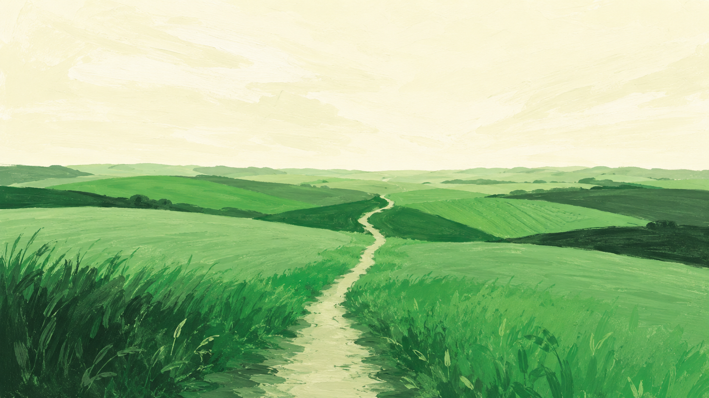
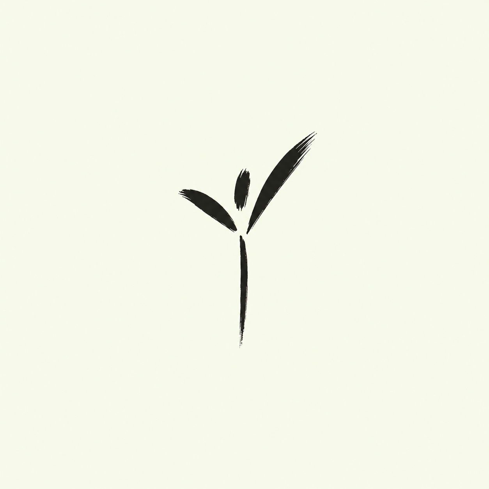

System
everyfield
The working reference for the everyfield marketing surface. Direction ruled: sharp — rectangles and defined edges, type that is light and giant, a serif that does the storytelling, and green spent only where it signals.
01 · Palette
Cream warmed to a true cream #FBF8EA — red leads green, so it no longer reads pale-green. The allowed pairings on dark are cream-on-ink and ink-on-green — green-on-ink is retired by ruling (too much), along with green text on cream (1.7:1, illegible). Deep field green carries green's meaning in running text.
02 · Type
Outfit 400 owns display at −3% tracking — light and giant, scale talks. Newsreader carries the serif warmth: leads, pull quotes, italic emphasis words. DM Sans is body and UI; DM Mono annotates and labels.
03 · Brand mark
Every field, one work. The lockup is primary; the mark stands alone in small spaces. Decorative crops and mark-as-pattern are parked for a later exploration — for now the mark appears only at functional sizes.
04 · Voice
Grounded shepherd, ruled 2026-07-27. Short declaratives, concrete nouns, "you" always. We promise clarity, never growth — growth isn't ours to promise.
The pitch
EveryField puts a proven planting methodology to work on your real progress — the people, meetings, and momentum that get you to launch Sunday — and tells you what deserves your attention this week.
How we speak
Never
05 · Components
Cards are flat surfaces with defined 1px rings at radius zero — no washes, no shadows-as-decoration. Buttons are rectangles: ink fills, 1px-outline ghosts, hovers that invert. Green is spent as a signal — registration squares, active rules — and once as the closing panel.
People
Every contact and follow-up — you'll never lose track of someone God sent your way.
Meetings
Vision meetings, orientations, team nights — attendance feeds your momentum picture.
86–90%
of plants with real assessment, training, and coaching are still alive at year four.
68%
of unsupported plants make it that far. Support is the difference — EveryField is how you give it consistently.
We stopped guessing where our plants were. Now we know — and so do they.
Placeholder · replaced by a real sending-network voice or removed06 · Interactive patterns
Two Intercom-style patterns that keep the page short: a feature switcher where the list drives the product view, and phase tabs where each stop on the journey shows what the app actually does there. Click around — these are live.
142 people · 12 committed
Discovery is for learning and honest self-assessment — EveryField gives you the map before you start walking.
The core group phase lives in people and vision meetings — EveryField tracks both and shows you the conversion that matters.
The core group becomes a launch team — EveryField tracks commitments and starts the countdown.
Training readiness across the eight ministry areas, visible at a glance.
17 of 23 team members trained
The final integration sprint — dry runs, promotion, and a checklist that ends at zero.
Day-of execution and honest numbers afterward.
The weeks after launch decide the years after launch — momentum stays visible.
07 · Art
Color arrives through art, not decoration. The landscapes carry the landing page; the ink-brush sprout is loved and parked — more brush pieces are an option if they don't drift too close to Intercom's language. Generative mark patterns: parked for a later exploration.



08 · The landing page
Feedback pass applied: straight-edged cards, no washes, no glows, no decorative marks, no green-on-ink. The pillar grid became the feature switcher and the journey became phase tabs — the page got shorter and more alive at the same time.
EveryField puts a proven planting methodology to work on your real progress — the people, meetings, and momentum that get you to launch Sunday — and tells you what deserves your attention this week.
EveryField is in early access. Invites go out through sending networks and churches.
Most planters run their plant across a CRM built for sales, a spreadsheet built for budgets, and a notebook built for nothing in particular. None of them know what a vision meeting is. None of them know what a healthy core group looks like. EveryField does.
Plant intelligence
Every week, EveryField looks at your plant's real activity — who's committing, how meetings are trending, where momentum is building or stalling — and weighs it against a methodology that has launched healthy churches for years. You get a short list of what matters most right now.
You stay the shepherd; it keeps watch.
A proven path under the whole journey — and at every stop, the app knows what the work is. Pick a phase.
For sending churches & networks
Whether you send one plant every few years or a hundred a year, you see the same thing: portfolio health at a glance — plants on track, plants that need attention, and where your coaching hours will matter most. Planters control what they share; you see health, not their people's private records.
86–90%
of plants with real assessment, training, and coaching are still alive at year four.
68%
of unsupported plants make it that far. Support is the difference.
EveryField is in early access with a small cohort of planters and their sending networks. If that's you, we'd love to talk.
Request an invite09 · Discipline
Including what was tried and retired — from the 2026-07-29 feedback pass and the 2026-07-30 side-by-side ruling that settled the direction.
Do
Retired by ruling